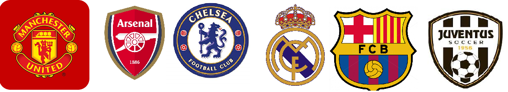

| Λίγα λόγια | Ιστορια | Κανόνες | Ο αγωνιστικός χώρος | Ιστορική Ελληνική νίκη | Παγκοσμίως γνωστές ομάδες | Επικοινωνία |
Το ποδόσφαιρο είναι ομαδικό άθλημα που παίζεται ανάμεσα σε δύο ομάδες των έντεκα παικτών με μία σφαιρική μπάλα. Ο ποδοσφαιρικός αγώνας διεξάγεται σε ένα ορθογώνιο γήπεδο με φυσικό ή τεχνητό χλοοτάπητα πράσινου χρώματος και ένα μεταλλικό πλαίσιο στο μέσο κάθε μιας από τις στενές πλευρές, το «τέρμα».
Σκοπός κάθε ομάδας είναι να οδηγήσει τη μπάλα στο αντίπαλο τέρμα, δηλαδή «να βάλει γκολ» (από την αγγλική λέξη goal που σημαίνει σκοπός) ή «να σκοράρει», όπως λέγεται στην ειδική ποδοσφαιρική γλώσσα. Οι παίκτες χειρίζονται τη μπάλα κυρίως με τα πόδια, αλλά και με τον κορμό ή το κεφάλι. Η ομάδα που θα επιτύχει τα περισσότερα γκολ ως το τέλος του παιχνιδιού κερδίζει ενώ αν καμία ομάδα δεν σκοράρει ή και οι δύο ομάδες καταλήξουν στο τέλος του παιχνιδιού με την ίδια βαθμολογία σε σκορ τότε το παιχνίδι λήγει ισόπαλο.
Είναι ιστορικά καταγεγραμμένο ότι σε πολλές χώρες υπήρξαν παιχνίδια όπου οι παίκτες κλοτσούν μία μπάλα, όπως ο επίσκυρος στην Αρχαία Ελλάδα, το «woggabaliri» στην Αυστραλία, το «harpastum» στη Ρωμαϊκή Αυτοκρατορία και το «cuju» στην Κίνα. Οι σύγχρονοι κανόνες του ποδοσφαίρου βασίζονται στις προσπάθειες που έγιναν στα μέσα του 19ου αιώνα για τυποποίηση των ποικίλων μορφών του ποδοσφαίρου που παιζόταν στα δημόσια σχολεία της Αγγλίας. Η ιστορία του ποδοσφαίρου στην Αγγλία χρονολογείται τουλάχιστον από τον όγδοο αιώνα.
Το Διεθνές Ποδοσφαιρικό Συμβούλιο έχει καθορίσει 17 κανόνες, που είναι γνωστοί ως Κανόνες Παιχνιδιού και δημοσιεύονται από τη FIFA.Κάθε κανόνας περιγράφει προδιαγραφές ή ορίζει κατευθυντήριες γραμμές. Οι ίδιοι κανόνες εφαρμόζονται σε όλα τα επίπεδα αγώνων, αν και επιτρέπονται ορισμένες τροποποιήσεις για ομάδες παίδων, παλαιμάχων, γυναικών και ατόμων με ειδικές αδυναμίες. Οι κανόνες είναι συχνά διατυπωμένοι με γενικό τρόπο, επιτρέποντας έτσι την ευελιξία στην εφαρμογή τους ανάλογα με τη φύση του παιχνιδιού. Εκτός από τους 17 κανόνες, πολλές από τις αποφάσεις και οδηγίες του Διεθνούς Ποδοσφαιρικού Συμβουλίου συμβάλλουν στη ρύθμιση του αθλήματος.
Μερικοί από τους 17 κανόνες είναι οι εξείς:
| 1. | Κανόνας 1 | Πέναλτι |
| 2. | Κανόνας 2 | Παραβάσεις και ανάρμοστη συμπεριφορά (Φάουλ) |
| 3. | Κανόνας 3 | Διαιτητής |
| 4. | Κανόνας 4 | Βοηθοί διαιτητές |
Ο αγωνιστικός χώρος διεξαγωγής του ποδοσφαίρου είναι γήπεδο σε σχήμα ορθογώνιου παραλληλόγραμμου, το οποίο χαράσσεται με λευκές γραμμές. Όλες οι γραμμές πρέπει να έχουν το ίδιο πλάτος, το οποίο δεν πρέπει να υπερβαίνει τα 12 εκατοστά, και θεωρείται ότι αποτελεί χώρο της περιοχής την οποία ορίζει κάθε γραμμή. Οι δύο μακρύτερες πλευρές του παραλληλογράμμου ονομάζονται πλάγιες γραμμές και οι δύο στενότερες γραμμές τέρματος.Για διεθνείς ποδοσφαιρικούς αγώνες ενηλίκων το μήκος της πλάγιας γραμμής πρέπει να κυμαίνεται από 100 μέχρι 110 μέτρα και η γραμμή τέρματος από 64 μέχρι 75 μέτρα. Για εθνικούς και άλλους μικρότερους ποδοσφαιρικούς αγώνες η πλάγια γραμμή μπορεί να έχει μήκος 90 έως 120 μέτρα και η γραμμή τέρματος από 45 έως 90 μέτρα, με την προϋπόθεση ότι το μήκος της πλάγιας γραμμής είναι πάντα μεγαλύτερο από το μήκος της γραμμής τέρματος και ο αγωνιστικός χώρος δεν γίνεται τετράγωνο. Παρόλο που το Διεθνές Ποδοσφαιρικό Συμβούλιο ενέκρινε το 2008 τυποποιημένα μεγέθη (105 μέτρα για την πλάγια γραμμή και 68 μέτρα για τη γραμμή τέρματος) για διεθνές αγώνες επιπέδου Α, η απόφαση αυτή δεν εφαρμόστηκε ποτέ.
Το Ευρωπαϊκό πρωτάθλημα ποδοσφαίρου 2004, ή αλλιώς Euro 2004, διεξήχθη στα γήπεδα της Πορτογαλίας από τις 12 Ιουνίου ως τις 4 Ιουλίου 2004. Ήταν η 12η διοργάνωση ευρωπαϊκού πρωταθλήματος της UEFA. Πήραν μέρος 16 εθνικές ομάδες. Απ' αυτές η Πορτογαλία προκρίθηκε αυτόματα ως διοργανώτρια χώρα ενώ οι υπόλοιπες 15 πέρασαν από μια προκριματική φάση στην οποία μετείχαν 50 ομάδες.
Το τρόπαιο κατέκτησε η Ελλάδα, ενάντια σε όλα τα προγνωστικά. Μετείχε μόλις για δεύτερη φορά σε τελική φάση Ευρωπαϊκού Πρωταθλήματος (μετά το 1980) και ήταν ένα από τα αουτσάιντερ του τουρνουά. Έκανε την πρώτη έκπληξη στην πρεμιέρα, νικώντας με σκορ 2-1 τη διοργανώτρια Πορτογαλία. Στη συνέχεια υπό την καθοδήγηση του Ότο Ρεχάγκελ και με όπλο την πολύ καλή άμυνα προκρίθηκε στα προημιτελικά, απέκλεισε διαδοχικά τη Γαλλία και τη Τσεχία και έφτασε στον τελικό της 4ης Ιουλίου. Εκεί συνάντησε πάλι την Πορτογαλία και την κέρδισε για δεύτερη φορά με 1-0 και σκόρερ τον Άγγελο Χαριστέα.
| Άρθρο 1 | Άρθρο 2 | Άρθρο 3 |
Μερικές από τις πιο διάσημες και πιο πετυχημένες ομάδες στον κόσμο είναι οι εξείς:
(Πατήστε στα σύμβολα των ομάδων για να μεταβήτε στον ιστότοπο τους)
